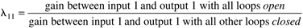
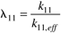
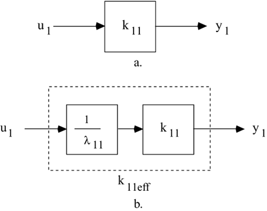
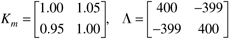
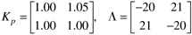

| [ Team LiB ] |
|
13.7 RGA and SensitivityThe previous sections have introduced the concept of the RGA, to help determine which input should be paired with which output to form a multivariable control system composed of a number of single input–single output controllers (we refer to this as a MVSISO system). The purpose of this section is to discuss the relationship between relative gain and controller tuning. It should become clear that the RGA gives valuable insight into the failure sensitivity of a control system. We also present numerous examples to illustrate the important concepts. Failure SensitivityWhen tuning a set of SISO controllers to form a MVSISO strategy, it is important to consider the failure sensitivity of the system. For example, consider a two input–two output system. If loop 1 is tuned to operate well when loop 2 is closed, we must also consider what happens when loop 2 is opened. It is possible for loop 2 to be opened in a number of ways. The most obvious way is for an operator to put loop 2 on manual control (i.e., open loop). Another way is if the second manipulated variable hits a constraint, say if the valve goes all the way open or closed—this means that the second input can no longer affect the second output, which is equivalent to being open loop. Relative Gain as a Perturbation of the Nominal ProcessConsider a system where loop one has output 1 paired with input 1. The relative gain is defined as  Using k11 to represent the steady-state gain between input 1 and output 1,  From Equation (13.27), we can represent the effective gain as
where
We can really represent the effect of the relative gain by comparing the two block diagrams shown in Figures 13-12a and b. Figure 13-12. Process gain between input 1 and output 1 when loop 2 is open versus when loop 2 is closed. (a) Process gain between input 1 and output 1 when loop 2 is open. (b) Effective process gain between input 1 and output 1 when loop 2 is closed. Comparing Figures 13-12a and b, we see that the effective process gain between input 1 and output 1 with loop 2 is closed is simply a perturbation of the open-loop gain between input 1 and output 1 by a multiplicative factor of 1/l11. Relative Gains Between 0 and 1If a relative gain is less than 1, this means that k11,eff > k11. If a controller for loop 1 is based on k11 (implicitly assuming that loop 2 is open), then when loop 2 is closed, the controller gain for loop 1 (kc1) should be detuned approximately by a factor of l11, otherwise the control system will respond too rapidly and there will be a chance of instability. If, on the other hand, the controller for loop 1 is tuned based on loop 2 being closed, then kc1 can probably be increased by a factor of 1/l11 when loop 2 is opened. The problem is, if the kc1 is kept at this new larger value when loop 2 is closed again, there is again a potential for instability. This analysis indicates that for safety purposes, if the relative gain is less than 1, then loop 1 should be tuned based on loop 2 closed. Relative Gains Greater than 1If a relative gain is greater than 1, this means that k11,eff < k11. If a controller for loop 1 is based on k11 (implicitly assuming that loop 2 is open), then when loop 2 is closed, the controller gain for loop 1 (kc1) can be increased approximately by a factor of l11. The problem is, if loop 2 is then opened again, the controller gain will be too high, and there is a chance of instability. If, on the other hand, the controller for loop 1 is tuned based on loop 2 being closed, then kc1 should be decreased by a factor of 1/l11 when loop 2 is opened. This analysis indicates that for safety purposes, if the relative gain is greater than 1, then loop 1 should be tuned based on loop 2 open. Negative Relative GainsThink about the ramifications of having a negative relative gain. If l11 is negative, this means that the gain between u1 and y1 with loop 2 closed (k11,eff) has the opposite sign compared with the gain between u1 and y1 with loop 2 open (k11). This has the following ramifications. First of all, assume that the process is open-loop stable. For open-loop stable processes that have a controller with integral action, the controller gain must have the same sign as the process gain. If the controller for loop 1 is designed with loop 2 open, it will have a controller gain with a certain sign. Then, when loop 2 is closed, it must have an opposite sign in order to be stable! This is certainly not a desirable situation and is unacceptable in practice. A controller for loop 1 designed based on g11 (loop 2 open) will be destabilized when loop 2 is closed. If the controller for loop 1 is designed based on g11,eff (loop 2 closed), the controller will be destabilized when loop 2 is opened. This leads to the following statement regarding failure sensitivity. Failure SensitivityA control strategy that is based on pairing on a negative relative gain is failure sensitive and is unacceptable. Never select input-output pairings based on a negative relative gain. Implication for SubsystemsMany control strategies have more than two control loops. Consider a case where there are three control loops, for example. If the variable pairings have been performed so that the corresponding relative gains are positive (and hopefully close to 1.0), then we need to consider the failure sensitivity of all possible controller failures. For example, if loop 1 fails, it is important then to make certain that the RGA of the subsystem with loop 1 removed still satisfies the requirement of positive relative gains on all paired inputs and outputs. Sensitivity to Model UncertaintyLarge Relative Gains (>>1)Large relative gains correspond to a high sensitivity to uncertainty. This is shown in the following example. Example 13.3: Model Uncertainty and the RGAConsider a steady-state process model with the corresponding RGA:  The actual process could very easily have a minor error of 5% in the gain relating u1 to y2, as shown in the actual process gain matrix and RGA:  Notice that the model requires that input 1 be paired with output 1, while the relative gain for the actual plant (model + uncertainty) indicates that input 1 must be paired with output 2. In this case, we have no choice but to use only one control loop. In this case we would use physical insight and dynamic considerations to select the loop to close. Sensitivity to Model UncertaintyA large relative gain (the order of 25 and higher) corresponds to an extreme sensitivity to model uncertainty and indicates that some loop should be opened; that is, not all outputs should be under feedback control. One process that can have multivariable control, even with a large relative gain, is distillation, where nonlinear effects dominate. |
| [ Team LiB ] |
|